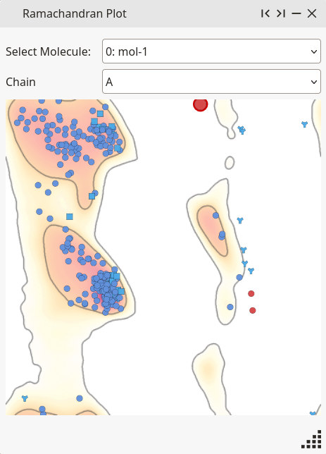
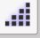
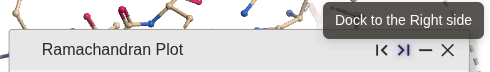
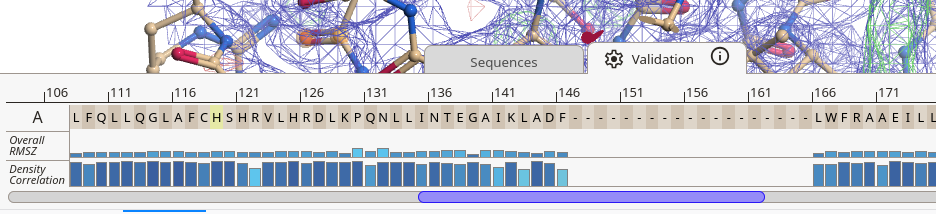
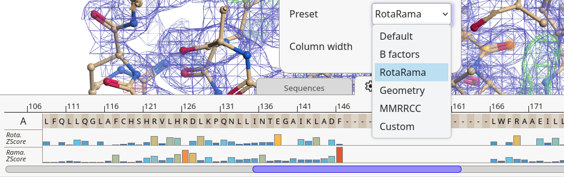
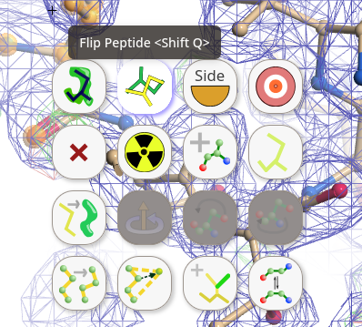
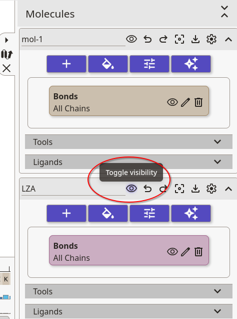

In this tutorial we will walk through the process of fixing up a protein model in a way that is consistent with the data. And fit a ligand into the density.
Open the first tutorial data (see Getting Started for how to do this)
Validation Tools
Our job is to fix and amend the protein model in a way that is consistent with the data. Let’s first look at the Ramachandran plot:
Ramachandran Plot
- Open the Validation window
- Choose Ramachandran Plot

You can resize the dialog for a better view of the plot (pull bottom right triangle).

Or dock it to the side of the main window.

You will see that there are several interesting red spots.
- Let’s click on the spot at the middle top.
Moorhen will put residue A180 at the centre of the screen
Take a look at the region…
Hmmm… the carbonyl oxygen atoms are a bit close to each other. Are there any other Ramachandran outliers in the area?
Measuring Distances
To measure the distance between atoms, hold M and click on an atom, then (with “M” still pressed) click on another atom.
2.26 A is too close.
To undisplay the distance, press the “C” key.
Sequence Validation plot
Moorhen provide an array of validation data for every residue in the model. To view this, let's click to the Validation tab next to the Sequence tab. After a quick loading, you will see a series of coloured bars for each residue in the model.

The first line is an overall geometry quality indicator, the second line is the density correlation for this residue. Hovering a residue bar chart will show a tool tip with extended data for the residue. Clicking on a residue bar chart will centre the view on that residue. More information about the validation data can be found by clicking the i.Let's change the default data: click the gear icon to open the setting dialog. Change the preset from "Default" to "RotaRama".

The top line now shows the rotamer probability, and the bottom line shows the Ramachandran probability.
Ramachandran Balls
- Click on Models, or on the model tab if it is active
- Open the Tools panel for the model, and activate Ramachandran Balls button for this protein model.
Moorhen displays Ramachandran balls that uses colour to represent the probability of those phi, psi angles for that residue
Residue A180 has a red ball and just upstream at A178 the LYS has an orange ball. Maybe both of these can be improved.
Notice that there is a green blob close to the N of A180. Maybe it would be better if that blob were fitted by the carbonyl of the peptide. So let’s try that:
Flipping a Peptide
- Click middle-mouse the N atom of residue A180
- Click right-mouse on an atom in the peptide (O atom of 179)

Moorhen displays a grid with icons for modelling (with which you may already be familiar if you have used Coot)
As you move the mouse over the icons in the toolbar, you will see a tooltip for that icon.
- To flip the peptide you want to use the “Flip Peptide” button. Click it.
Moorhen flips the Peptide and the Ramachandran ball for that residue turns green
Yay. Progress. Let’s see if we can do the same for peptide bond between A177 and A178.
- Bring A177 CA to the centre of the screen
- Click right-mouse over a peptide and then
- Click on the “Flip Peptide” button
Moorhen flips the peptide and the Ramachandran ball for 177 turns green
More progress. Good stuff.
- Look at the Ramachandran Plot again. Notice that the red spots for the problematic residues have disappeared.
Navigation tip 1: Use middle mouse button click on an atom to put the centre of the residue at the centre of the screen. Use Alt left mouse to put the clicked atom at the centre of the screen.
Navigate tip 2: To go to a specific residue, use Edit → Go to… and in the “Atom selection” entry type the residue selection, e.g. “//A/156” to mean residue 156 in the “A” chain.
Real Space Refinement
- Right click on an atom in residue A179
- Click on the “Refine Residues” button (the icon is a target).
Moorhen refines residues along the chain
Now the local backbone fits quite nicely into the blue map (but the Rama balls may not be completely green).
Connect the Maps: Updating Maps
Wouldn’t it be nice though, if the difference map updated when you add atoms to green blobs or removed them from red blobs. A good correction of the model would then make those blobs disappear.
Let’s try that:
- File → Connect molecule and map… → OK. (No need to change the values in the options menus because they are already setup to be correct.)
Moorhen will display a “toast” top left informing you of the current R-factor and the number of Moorhen points that you have collected (so far none, because we have just started)
Note: Using updating/connected maps will slow down the model-building process somewhat but we now have the advantage of collection Moorhen points and watching the R-factor go down as we make changes. Moorhen points indicate progress in flattening the difference map.
Difference Map Peaks
In the Validation dialog, the active tool in the Validation option menu is the Ramachandran Plot
- Let’s change that to Difference Map Peaks.
Moorhen displays the difference map peaks in a waterfall plot
On the left of the waterfall plot are the most positive peaks (and if there were any the most negative peaks would be displayed on the far right).
- Here I find it useful to adjust the contour level to 0.64 (and 0.47 for the difference map).
- Let’s open the Validation Tools card again and click on the biggest/leftmost peak.
What are we looking at? An orange Ramachandran ball?
Flipping… flipping
It’s a flipped peptide.
- So let’s flip it to the correct orientation.
As we do so, Moorhen makes several updates. It moves the model, it updates the maps in the light of the new model, it updates the Ramachandran balls so that they are both green now. In the toast, it updates the R-factor (a tiny amount) and gives us some Moorhen points.
Flipping a peptide to the correct orientation generally gives you 15-20 Moorhen points.
Have a look around… At the end of the helix, residues A198 has an orange Ramachandran ball and a green difference map peak along the peptide. Let’s flip that too while we are here.
- Click the “Flip Peptide” button and pick the “C” atom of A197. You can use the key-binding “Shift Q” to flip the peptide when you hover of an atom of the residue and see golden balls.
As before, the Rama balls update, the maps update (the green blob disappears), the R-factor updates and we get more Moorhen points.
You will notice that that the Difference Map Peaks graph has been updated too - the leftmost peak has gone. Have a look at the next 12 or so peaks. What do you notice?
Adding Waters
You will notice that they are mostly peaks of waters. We could add waters one by one, but a more automated method is to do many at the same time.
- Calculate → Add waters… → OK
This will add around 100 waters. And as above, the maps and the R-factors will update and we will get many Moorhen points. The map should improve a bit so that the ligand is more easy to make out.
Contact Dots and Clashes
- Use the sequence viewer to navigate to residue A194.
What this? It’s a flipped peptide - let’s flip it back to where it should be. But having done that, what do you notice? Let’s use Moorhen’s clash analysis:
- In the Model panels, and tools for the tutorial structure, switch on Contact dots - click it.
Moorhen display contact dots and clash interactions
Wooh! Pink sticks. Bad news! So let’s also flip the peptide on the next rung of the helix - residue A197.
The contact dots between A194 and A197 disappear
- OK, you can turn off the contact dots for now.
Change the Residue Type
Now navigate to residues A193. What do the maps tell you is going on here? What is the residue type? What does the model say? What does the map say?
OK, so first let’s fill the side-chain with the atoms of the type from the main-chain atoms: “TYR” - use right-mouse to get the context-sensitive menu and click on the “Auto-fit Rotamer” button (top left).
What do we see? What does that suggest?
It suggests that the sequence of the model doesn’t match the sequence of the protein from which the data were collected. OK, so let’s mutate it.
- In the context-sensitive menu, click the “Mutate Residue” button (it’s the radtion symbol), then from the residues type chooser currently “ALA (A)” choose “PHE (F)”
Moorhen updates the map so that the red blob goes away
Navigate to residue A168. What do we see? What should it be instead?
Mutate
OK, so let’s mutate it:
- Use the (right-mouse menu) “Mutate Residue” button change the type to “TYR (Y)”
(More Moorhen Points - yay).
Let’s go back to the Difference Map Peaks in the Validation tools. Now you can see negative peaks. Let’s have a look at those.
Can you find a negative difference map peak that is close to residue A187? Have a look at the model? What needs to be changed?
Rotamers
In the Model window, click the box for “Rota. dodec”
Moorhen displays rotamer dodecamers coloured by rotamer probability
Yellow is not so high probability. Can we find something with higher probability than the current rotamer?
- Let’s change the rotamer using the “Auto-fit Rotamer” button.
On improvement of the rotamer probability, Moorhen will change the colour of the dodecahedron to be more green
Can you find a negative difference map peak close to residue A141? Again examine. What do we need to do? Let’s fix the rotamer then using “Auto-fit Rotamer” as before.
Fit the Ligand
OK, now it’s time to fit the ligand!
- Use the Difference Map Peaks to navigate to the ligand.
Several of the top 5 peaks should now correspond to the ligand.

- Ligand → Get Monomer →
- Add “LZA” in the “Monomer identifier” entry → OK
Moorhen imports the LZA ligand
OK, fine. Now let’s undisplay it:

In the Model panel, the bottom card should now be the card for the newly imported ligand (“LZA”). Click on the eye icon to undisplay the ligand.
Moorhen changes the icon to an uncrossed eye and the ligand disappears
- Ligand → Find ligand…
- Check the options then click Find.
Moorhen presents a new dialog saying that 1 possible ligand location
To visualize the ligand, click on the “boxed circle” icon and the ligand will appear in the density.
It should be a reasonably close fit but not exact because the algorithm didn’t use conformational variation.
To refine ligand click the “target” icon in that dialog.
To merge the ligand, use the “arrow” icon in that dialog.
Moorhen updates the maps so that the difference map blobs change
Add a Water
- Navigate to the nearby water peak using middle-mouse click and drag (or Shift-Alt Left-Mouse on a PC) to drag the view to the water blob.
- You can also use the arrow-keys to pan the view.
Let’s add a water here
- In Edit menu click on the Add simple menu item
- Change the option menu to read “HOH” (if needed)
- OK
Moorhen adds a water at the centre of the screen
There are several water peaks in the map similar to this.
At some stage, when you add a water, you will see a the contours of negative density over part or all the water peak. What does that mean?
Over to You!
- Click on the validation bars to navigate to interesting parts of the structure and make some fixes.
You should be able to collect about 1800 Moorhen points. Maybe more!
Make a Pretty Picture
- Open the maps panel, undisplay the maps using the eye icon
- Deactivate the Ramachandran and rotamers tools
- Click on the button to select the picture wizard
- The default is "Binding site and ribbons", let's keep that and click OK
- 3 new representations are automatically added to the model.
To navigate to the ligand:
- Open the ligand accordion that now appears under tools
- Click on the Show buttons
Use keyboard “S” to activate the “in application” screen capture.
Pretty picture: You can change many of the *image parameters in the View -> Scene Settings panel. For example, you can change the background colour, the lighting, add some outline...
Export Your Molecule
- In the Model window, click the “download” icon
Then it’s time to think about Reciprocal Space Refinement.
Notes
The tutorial is based on 2vtq “Identification of N-(4-piperidinyl)-4-(2,6-dichlorobenzoylamino)-1H-pyrazole-3-carboxamide (AT7519), a Novel Cyclin Dependent Kinase Inhibitor Using Fragment-Based X-Ray Crystallography and Structure Based Drug Design” Wyatt, P.G. et al. (2008), J. Med. Chem. 51, 4986.